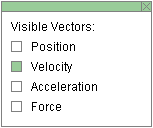
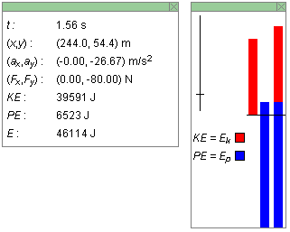
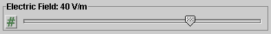
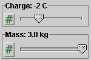
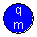

There are four basic control buttons. They are, from left to right:
-
 Rewind. Resets the simulation to the initial
position with the previously chosen initial values. If
you have the particle path displayed, Rewind will allow
you to compare paths traversed under different
conditions, e.g., different initial velocities.
Rewind. Resets the simulation to the initial
position with the previously chosen initial values. If
you have the particle path displayed, Rewind will allow
you to compare paths traversed under different
conditions, e.g., different initial velocities.
After clicking Rewind, click Play to restart the motion.
-
 Play/Pause. Starts the motion.
Play/Pause. Starts the motion.
After Play has been clicked, the button will change into the Pause button
 . Clicking Pause will freeze the
motion. To resume the motion, click Play once more.
. Clicking Pause will freeze the
motion. To resume the motion, click Play once more.
-
 Step. Lets you step through the motion in equal
time steps.
Step. Lets you step through the motion in equal
time steps.
-
 Reset. Resets the applet to its default
setting.
Reset. Resets the applet to its default
setting.
Adjustments in the initial conditions can only be made after first clicking REWIND or RESET.


Displays or hides the particle's path in cyan.
The path is not erased when you click the Rewind button.

When the Grid button is selected, a rectangular set of coordinate grid lines is displayed.
The grid makes it easier to set the particle's initial position and to observe the particle's path.
To set the particle's initial position, click on the particle and drag. To make it easier to achieve a certain set of initial (x,y) values, hold down the SHIFT key while dragging the particle. This will allow dragging in either the horizontal or vertical directions only, thus making it easier to set one of the two coordinates at a time. Display the Data box (see Point 6 below) to observe the values of the (x,y)-coordinates while you drag.

This toggle button displays or hides the Vector Panel shown below on which you can select the vectors that you want to have displayed. You can display four vectors related to the particle: the position vector (in cyan), the velocity vector (in magenta), the acceleration vector (in orange), and the electric force vector (in black). In the Vector Panel illustrated below, only Velocity is selected.


When the Components toggle button is selected, the x and y components of the particle's velocity are displayed in pale magenta, whether or not the velocity vector itself is displayed.

The Data toggle button lets you display or hide the two boxes shown below, a box containing data and a box containing energy bars. Either box can be closed by clicking the "X" in the top right corner of the box. The boxes can be dragged separately.

The Data box displays the following information:
- t: time elapsed since the beginning of the motion
- (x,y): coordinates of the particle at time t relative to a coordinate grid that can be displayed by selecting the Grid button; the x-axis points to the right, the y-axis upward
- (ax,ay): acceleration of the particle at time t
- (Fx,Fy): electric force acting on the particle at time t
- KE: kinetic energy of the particle at time t
- PE: potential energy of the particle in the electric field at time t where PE is defined so that PE = 0 when the particle is at (x,y) = (0,0), which is in the lower left-hand corner of the visible part of the capacitor
- E = PE + KE: energy of the particle in the electric field with PE defined as above
The energy box contains three columns. They represent, from left to right,
- the kinetic energy KE of the particle, also denoted Ek or K,
- the electric potential energy PE of the particle, also denoted Ep,
- the kinetic and potential energies of the particle combined, the total length of the column being equal to the particle's energy E = KE + PE.
The zero of energy is indicated by the thin horizontal line across the three energy columns. The kinetic energy column rises above this line, since kinetic energy can only be positive, or zero. The potential energy column may have its top either above or below the line because potential energy can be either positive and negative. The total energy E also can be negative, when the potential energy is sufficiently negative so that even adding the kinetic energy does not make the total energy positive. The potential energy column should be imagined starting at negative infinity and rising to the level of the current potential energy like a thermometer column.
It can happen, for certain settings of the system parameters, e.g., particle velocity or electric field magnitude, that one or more of the energy columns have their tops either above or below the top or bottom edges of the Energy box. Use the Energy Zoom slider (see the following Point 7) to scale the columns so that their tops came back into view.
The Energy box contains a vertical slider in its upper left region. See the image in the preceding Point 6. The short cross bar can be dragged up or down to increase or decrease, respectively, the heights of the three energy columns measured from the zero level.

Two data fields are available to specify the initial velocity vector. Enter values in the two fields, and press ENTER on the keyboard to set the initial velocity. The magenta velocity vector, if displayed, will be adjusted accordingly. Alternatively, you can drag the tip of the velocity vector if the vector is displayed. The values in the two velocity data fields will be adjusted accordingly.
During the motion, the values in the velocity data fields and the magenta arrow represent the instantaneous velocity.
Four different modes are available for specifying the
velocity vector numerically. Choose between them by
clicking the button  to the left of the velocity data entry
fields. The button lets you cycle through the four
possibilities:
to the left of the velocity data entry
fields. The button lets you cycle through the four
possibilities:
-
Polar (positive)
The vector is specified by its polar coordinates: magnitude and direction angle. The direction angle is taken between the vector and the 'East' direction (positive x direction). All angles are positive between 0 and 3600, increasing in the counter-clockwise sense starting with the East direction.
-
Polar (pos & neg)

The mode is like the Polar (positive) mode, except that the angle are taken to be in the range from -1800 to 1800. An angle is negative if a vector points to a point below the horizontal axis, and it is positive otherwise.
-
Navigational
The mode is like the Polar (positive) mode, except that angles are taken relative to one of the four compass directions, either in the clockwise or counter-clockwise sense. This allows for eight different ways of specifying the angle, from east of north (E of N), to north of east (N of E), to west of north (W of N). The choice can be made from a drop-down menu that becomes available in the Navigational mode. All angles range from 0 to 3600.
-
Cartesian
(vx,vy)
The vector is specified by its x and y components relative to the horizontal x-axis and the vertical y-axis.


There are three sliders, for adjusting the electric field and the charge and mass of the particle.
The electric field in the applet is always vertical, but can be upward or downward. If the electric field slider is set to a positive value, the electric field is upward; if the slider is set to a negative value, the field is downward. The field direction is indicated by little green arrows in the region between the two plates. The electric field between the plates is due to uniformly distributed charges of opposite sign residing on the plates. The charge density on the plates is indicated by plus and minus signs.
The electric field can be varied from -100 V/m to 100 V/m in steps of 1 V/m. The charge can be varied from -3 C to 3 C in steps of 1 C. The mass can be varied from 1.0 kg to 3.0 kg in steps of 0.1 kg.
Clicking on a slider to the left or right of the slider tab allows fine adjustment of the slider setting.
Clicking on the Input Dialog button of a slider will open a dialog for entering an exact value for the slider setting. The dialog for the Charge-slider is illustrated below. The range in which values can be entered, from -3 C to 3 C in this case, is indicated above the data entry field.


The particle's charge q and mass m can be adjusted with sliders. See the preceding Point 9. In addition, the particle's initial position and velocity can be adjusted. See Point 8 about adjusting the initial velocity.
To adjust the particle's initial position, simply drag the ball. To make it easier to achieve a certain set of initial (x,y) values, hold down the SHIFT key while dragging the particle. This will allow dragging in either the horizontal or vertical directions only, thus making it easier to set one of the two coordinates at a time. Display the Data box (see Point 6 below) to observe the values of the (x,y)-coordinates while you drag.
The particle's motion is confined to the region that is bounded above and below by the capacitor's plates and on the right and left by the boundary of the applet window.